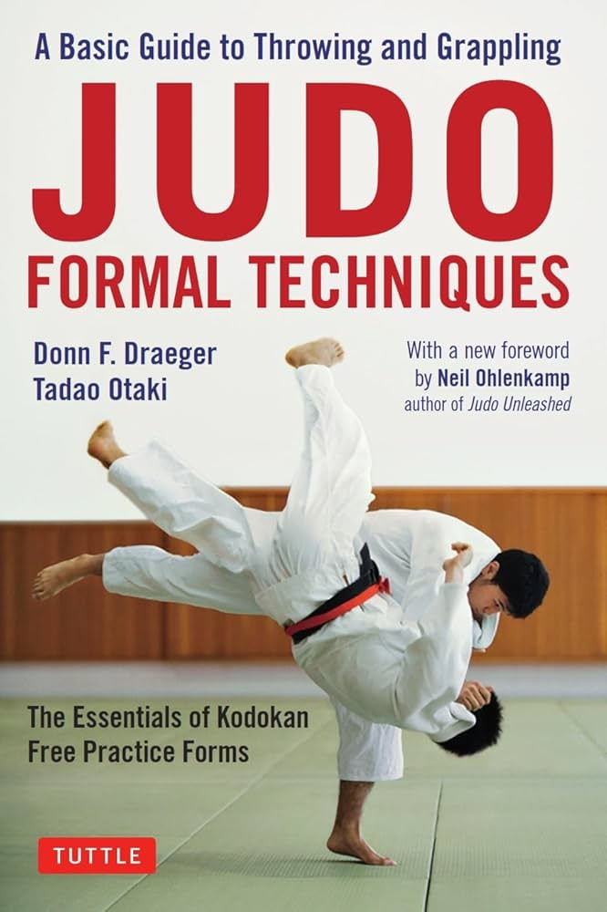
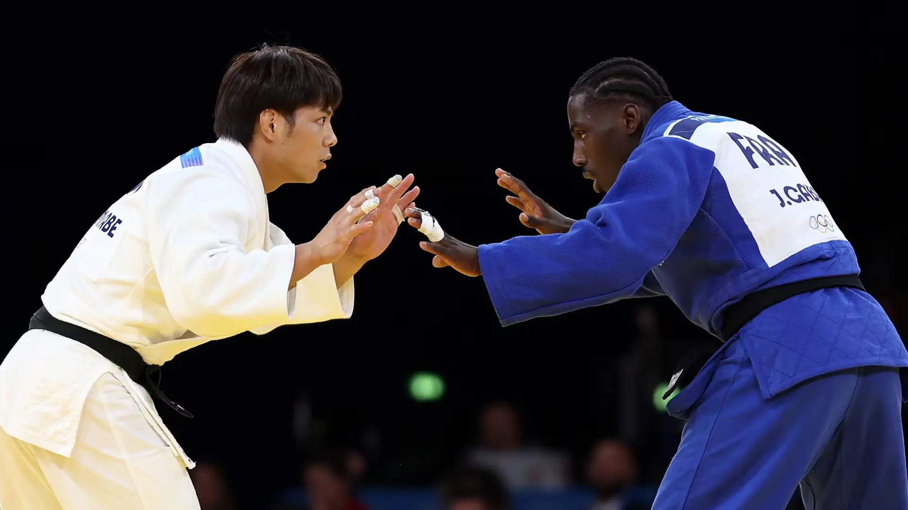
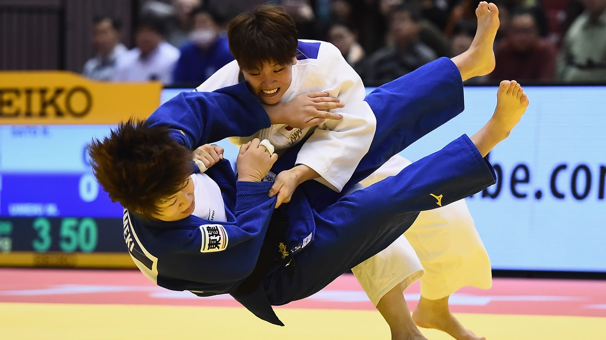
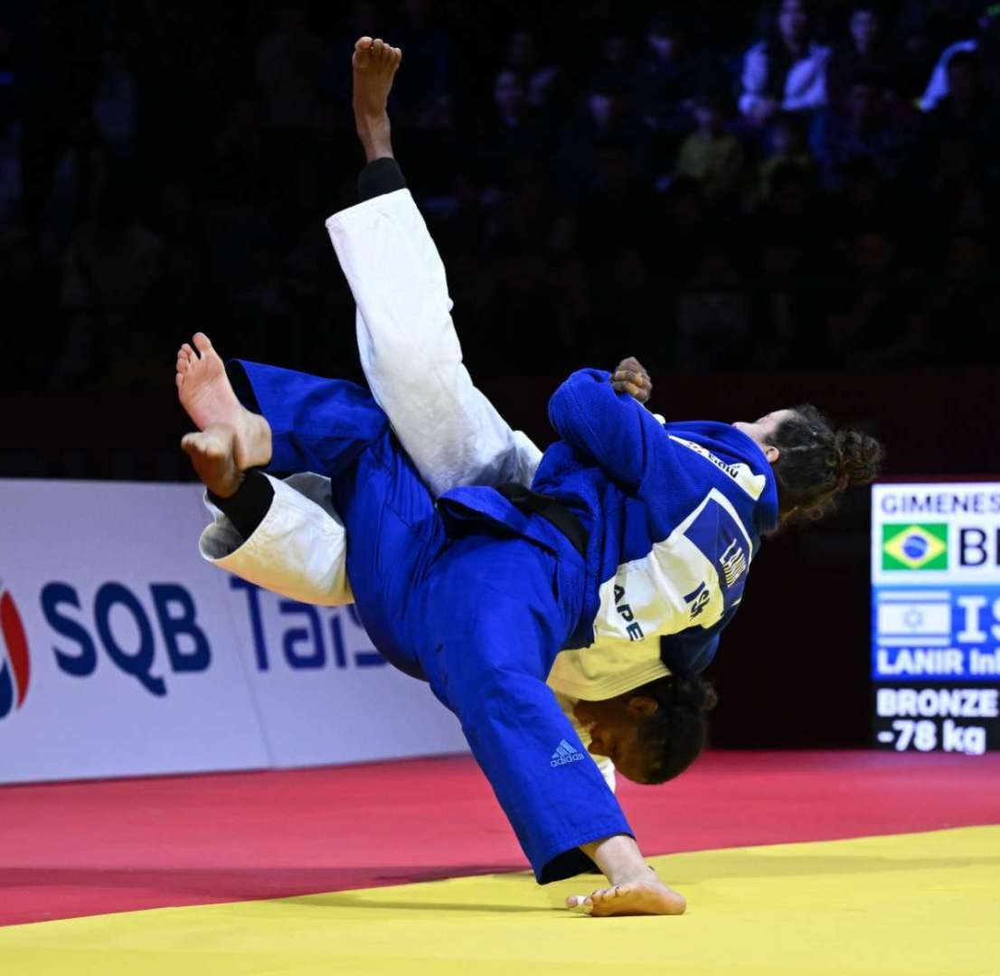
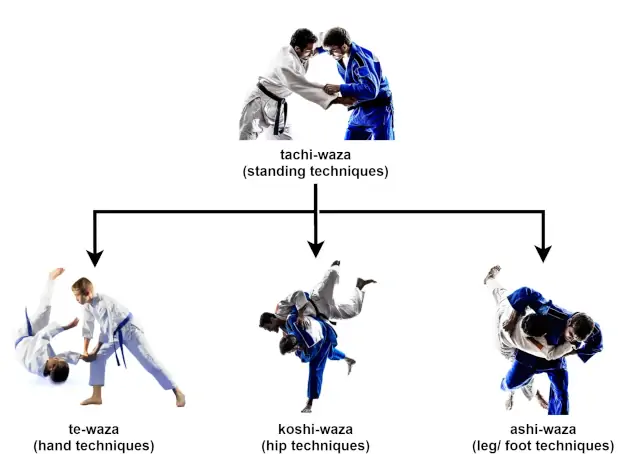
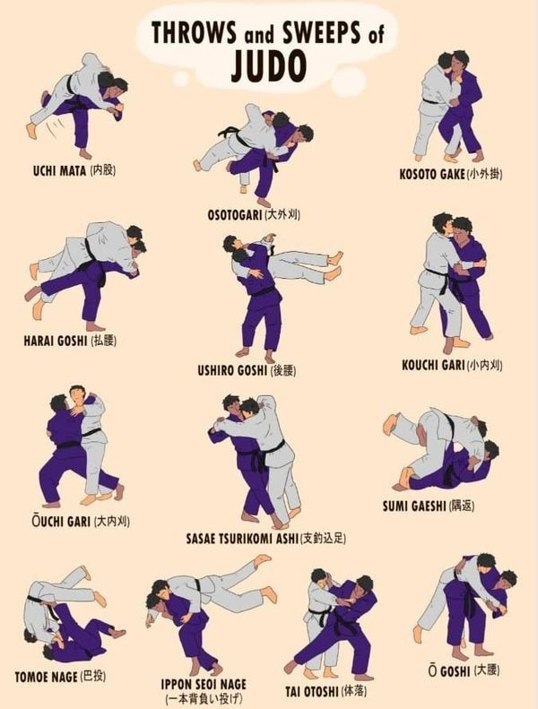
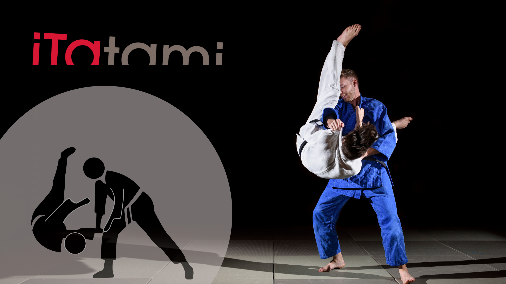

Judo

Judo (Japanese: 柔道, Hepburn: Jūdō; lit. 'gentle way') is an unarmed modern Japanese martial art, combat sport, Olympic sport
(since 1964), and the most prominent form of jacket wrestling competed internationally. Judo was created in 1882 by Kanō Jigorō
(嘉納 治五郎) as an eclectic martial art, distinguishing itself from its predecessors (primarily Tenjin Shinyo-ryu jujutsu and Kitō-ryū
jujutsu) due to an emphasis on "randori" (乱取り, lit. 'free sparring') instead of kata (形, kata; pre-arranged forms) alongside its
removal of striking and weapon training elements.

Judo rose to prominence for its dominance over established jujutsu schools in tournaments hosted by the Tokyo Metropolitan Police
Department (警視庁武術大会, Keishicho Bujutsu Taikai), resulting in its adoption as the department's primary martial art.
A judo practitioner is called a "judoka" (柔道家, jūdōka), and the judo uniform is called "judogi" (柔道着, jūdōgi; lit. 'judo attire').

The objective of competitive judo is to throw an opponent, immobilize them with a pin, or force an opponent to submit with a joint
lock or a choke. While strikes and use of weapons are included in some pre-arranged forms (kata), they are not frequently trained and
are illegal in judo competition or free practice.

Judo's international governing body is the International Judo Federation, and competitors compete in the international IJF
professional circuit. Judo's philosophy revolves around two primary principles: "Seiryoku-Zenyo" (精力善用; lit. 'good use of energy')
and "Jita-Kyoei" (自他共栄; lit. 'mutual welfare and benefit')
Techniques

The philosophy and subsequent pedagogy developed for judo became the model for other modern Japanese martial arts that developed
from Ko-ryū. Judo has also spawned a number of derivative martial arts around the world, such as Brazilian jiu-jitsu, Krav Maga, sambo,
and ARB. Judo also influenced the formation of other combat styles such as close-quarters combat (CQC), mixed martial arts (MMA), shoot
wrestling and submission wrestling.

Nage-waza include all techniques in which tori attempts to throw or trip uke, usually with the aim of placing uke on their back. \
Each technique has three distinct stages:
Kuzushi (崩し): the opponent becoming off balanced;
Tsukuri (作り): turning in and fitting into the throw;
Kake (掛け): execution and completion of the throw.
Nage-waza are typically drilled by the use of uchi-komi (内込), repeated turning-in, taking the throw up to the point of kake.
Katame-waza is further categorised into osaekomi-waza (抑込技; holding techniques), in which tori traps and pins uke on their back
on the floor; shime-waza (絞技; strangulation techniques), in which tori attempts to force a submission by choking or strangling uke;
and kansetsu-waza (関節技; joint techniques), in which tori attempts to submit uke by painful manipulation of their joints.
A related concept is that of ne-waza (寝技; prone techniques), in which waza are applied from a non-standing position.
In competitive judo, Kansetsu-waza is currently limited to elbow joint manipulation.[41] Manipulation and locking of other joints can
be found in various kata, such as Katame-no-kata and Kodokan goshin jutsu.
Atemi-waza are techniques in which tori disables uke with a strike to a vital point. Atemi-waza are not permitted outside of kata.
Randori(free practice)

Judo pedagogy emphasizes randori (乱取り; literally "taking chaos", but meaning "free practice"). This term covers a variety of forms
of practice, and the intensity at which it is carried out varies depending on intent and the level of expertise of the participants.
At one extreme, is a compliant style of randori, known as Yakusoku geiko (約束稽古; prearranged practice), in which neither participant
offers resistance to their partner's attempts to throw. A related concept is that of Sute geiko (捨稽古; throw-away practice), in which
an experienced judoka allows himself to be thrown by his less-experienced partner.[44] At the opposite extreme from yakusoku geiko is the
hard style of randori that seeks to emulate the style of judo seen in competition. While hard randori is the cornerstone of judo,
over-emphasis of the competitive aspect is seen as undesirable by traditionalists if the intent of the randori is to "win" rather than
to learn.

On October 28 of every year, the judo community celebrates the World Judo Day in the honor of the birth of Judo's founder, Jigoro Kano.
The theme of the World Judo Day changes from year to year, but the goal is always to highlight the moral values of Judo. The first
celebration was held in 2011.